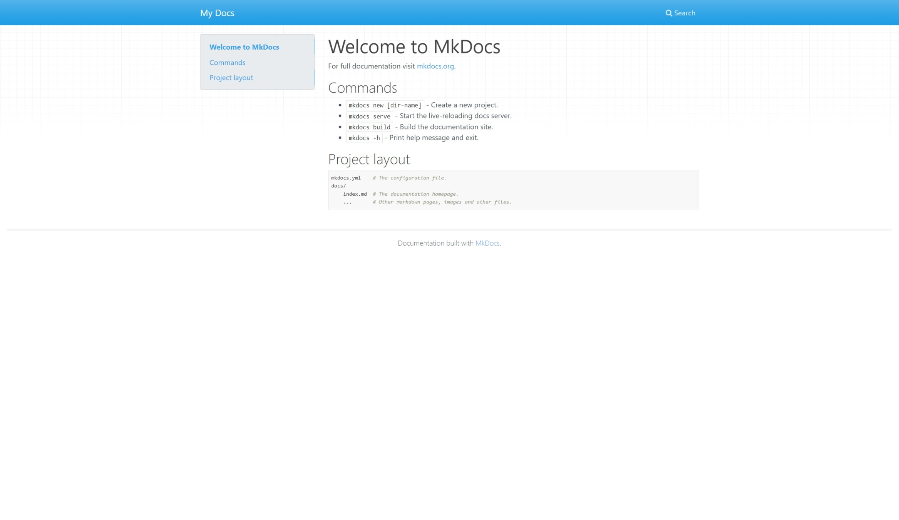

Material for Mkdocs的安装和配置⚓︎
安装 Python 3.x & pip⚓︎
Ubuntu换源⚓︎
# 默认注释了源码镜像以提高 apt update 速度，如有需要可自行取消注释
deb https://mirrors.tuna.tsinghua.edu.cn/ubuntu/ focal main restricted universe multiverse
# deb-src https://mirrors.tuna.tsinghua.edu.cn/ubuntu/ focal main restricted universe multiverse
deb https://mirrors.tuna.tsinghua.edu.cn/ubuntu/ focal-updates main restricted universe multiverse
# deb-src https://mirrors.tuna.tsinghua.edu.cn/ubuntu/ focal-updates main restricted universe multiverse
deb https://mirrors.tuna.tsinghua.edu.cn/ubuntu/ focal-backports main restricted universe multiverse
# deb-src https://mirrors.tuna.tsinghua.edu.cn/ubuntu/ focal-backports main restricted universe multiverse
deb https://mirrors.tuna.tsinghua.edu.cn/ubuntu/ focal-security main restricted universe multiverse
# deb-src https://mirrors.tuna.tsinghua.edu.cn/ubuntu/ focal-security main restricted universe multiverse
# 预发布软件源，不建议启用
# deb https://mirrors.tuna.tsinghua.edu.cn/ubuntu/ focal-proposed main restricted universe multiverse
# deb-src https://mirrors.tuna.tsinghua.edu.cn/ubuntu/ focal-proposed main restricted universe multiverse
然后sudo apt get update刷新并生效
pip换源⚓︎
下面演示换用清华源：
换源后下一次使用pip将立即生效。
安装 Mkdocs 和 material for mkdocs⚓︎
pip install mkdocs
pip install mkdocs-material
有必要将pip安装路径加入到系统环境变量中，以便后续使用。pip在发现安装路径不在环境变量中时也会发出警告。对于Ubuntu而言，这个路径在~/.local/bin，Windows用户可自行搜索，通常在python安装包下的Scripts路径
mkdocs -V查看版本，目前最新版为1.3.0，2022/7/8，如果系统能正常显示，说明安装成功并且能够在环境变量中找到mkdocs了
新建、预览和构建⚓︎
mkdocs new projectName 会在当前目录创建一个projectName文件夹，自动写入docs/index.md和mkdocs.yml。或者，mkdocs new .直接将当前文件夹作为projectName。当然了，mkdocs并不检查项目名，可以随意更改或者移动这些文件，mkdocs将一个路径视为mkdocs项目的要求仅仅就是mkdocs.yml
我们以后将mkdocs.yml所在的目录称为mkdocs基目录。
不需要做任何事，在 mkdocs基目录 运行mkdocs serve，mkdocs将会把一个即时更新的站点推到http://localhost:8000端口，以供预览，现在阶段应当能看到如下的样子：

mkdocs build会在 mkdocs基目录 中构建网页并存储到site路径下，此时site路径下就会是一个完整的静态网站包了，它与site文件夹外的内容不产生联系，可以独立工作，可以将这个文件夹中的内容部署到合适的服务器中，也可以将这个文件夹的内容放到其他网页的相应目录中，以构建一个多层次的网站。
之后，通过修改mkdocs.yml就可以左右项目的编译过程，对项目做一些个性化的设置，通过在docs文件夹内创建md文档即可创作新的内容。